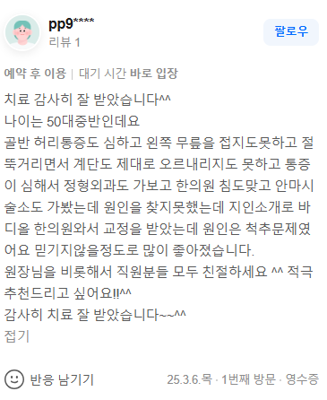

치료 증례
"치료 감사히 잘 받았습니다^^ 나이는 50대중반인데요 골반 허리통증도 심하고 왼쪽 무릎을 접지도못하고 절뚝거리면서 계단도 제대로 오르내리지도 못하고 통증이 심해서 정형외과도 가보고 한의원 침도맞고 안마시술소도 가봤는데 원인을 찾지못했는데 지인소개로 바디올 한의원와서 교정을 받았는데 원인은 척추문제였어요 믿기지않을정도로 많이 좋아졌습니다. 원장님을 비롯해서 직원분들 모두 친절하세요 ^^ 적극 추천드리고 싶어요!!^^ 감사히 치료 잘 받았습니다~~^^"

50대 중반에 접어들며 발생하는 골반 통증과 무릎을 굽히지 못해 절뚝거리는 증상은 대개 무릎 자체의 퇴행성 관절염으로 오인받기 쉽습니다. 그러나 정형외과 검사나 국소적인 침 치료, 안마시술 등을 통해서도 명확한 원인을 찾지 못했다면 인체의 하중을 분산하는 중심축인 골반과 요추의 구조적 변위를 의심해야 합니다. 골반이 틀어지면 고관절과 슬관절(무릎)로 이어지는 하지 운동역학적 사슬(Kinetic Chain)이 무너지며, 한쪽 무릎에만 비정상적인 체중 부하가 집중됩니다. 단순히 진료 편의성만을 강조하는 365일 야간진료 기관의 일시적인 통증 완화 치료나 근육과 인대 조직을 자극하는 도침, 일시적인 관절 마찰음(스러스트) 유도에 치중하는 일반 추나요법은 척추 심부 분절의 정렬을 근본적으로 바꾸지 못하므로 걸을 때마다 하중이 비대칭적으로 쏠리는 역학적 악순환을 끊어내기 어렵습니다.
틀어지고 잠겨버린 골반과 요추를 바로잡기 위해서는 퇴행성 척추 질환의 근본적인 구조적 원인 개선을 목표로 하는 솔루션이 반드시 선행되어야 합니다. 바디올한의원의 SART(공간척추정형술)는 전통 정골의학(Osteopathy) 및 추나요법의 생체역학적 원리를 기반으로 발전하여, 척추 분절 간의 물리적 공간을 확보하는 보존적 교정 기법입니다. 특수 정밀 교정 도구를 활용하여 단단하게 굳어진 요추 하부와 천장관절, 골반 주변의 심부 인대 조직을 미세하게 이완하고 분리해 냄으로써 변위된 뼈들이 제자리를 찾도록 유도합니다.
골반의 대칭이 복원되고 무너졌던 중력 중심선이 회복되면, 한쪽 하지로만 쏠리던 비정상적인 압박 벡터가 자연스럽게 지면으로 고르게 분산됩니다. 결과적으로 무릎 관절 내부의 기계적 마찰이 줄어들어 통증 없이 부드럽게 무릎을 접고 펼 수 있는 정상적인 보행 능력이 점진적으로 재건됩니다. 이러한 보존적 정형 구조 복원은 동탄, 광교 등 인근 지역에서 여러 치료를 시도한 뒤에도 보행 기능 저하가 지속되던 환자들이 수술 전 단계에서 안전하게 선택할 수 있는 생체역학적 보존 치료의 대안으로 수원 인계동 바디올을 신뢰하는 학술적 배경입니다[1][2].
환자의 척추 정렬 상태와 하지 가동 범위를 정밀 분석한 후, 안전한 강도의 미세 압박 벡터를 활용하여 골반과 요추 분절 간격을 넓히고 중력 분산 능력을 정상화합니다.
천연 성분의 약침 처방으로 구조적 불균형으로 인해 관절 주변에 누적된 만성 염증과 허혈성 통증을 제어하며, 척추 주변 근육의 긴장도를 낮춰 올바른 정렬 상태를 견고하게 유지시킵니다.
[1] Coulter ID, et al. (2018). Manipulation and mobilization for treating chronic low back pain: a systematic review and meta-analysis. The Spine Journal. (PMID: 29371112 / DOI: 10.1016/j.spinee.2018.01.013)
[2] Schneider M, et al. (2015). Comparison of spinal manipulation methods and usual medical care for acute and subacute low back pain. Spine. (PMID: 25433199 / DOI: 10.1097/BRS.0000000000000684)